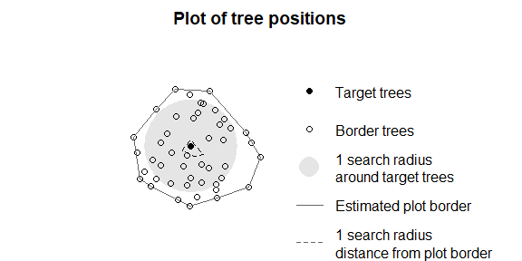

R Package for calculating distance-dependent or point cloud-based individual tree competition indices
R Package for calculating distance-dependent or point cloud-based individual tree competition indices
This R package is designed for the quantitative analysis of individual tree competition within forest ecosystems. It accepts inputs such as LiDAR point clouds (as dataframe with xyz columns or las/laz files) of forest plots and individual target trees, or inventory tables (including tree ID, x, y, dbh and/or h). Through the use of various competition indices, it enables the assessment and measurement of competition between trees, providing valuable insights for forest ecology, inventories, and forest management strategies. This package facilitates a systematic approach to understanding interactions and resource competition among trees and enables informed decision making in forest management.
Installation
You can install the development version of TreeCompR from GitHub with:
# install.packages("devtools")
devtools::install_github("juliarieder/TreeCompR", dependencies = TRUE)
# or with vignettes on your computer
devtools::install_github("juliarieder/TreeCompR",
dependencies = TRUE, build_vignettes = TRUE)Overview
TreeCompR can read point clouds or inventory tables and quantifies tree competition in different ways:
-
read_pc()reads 3D point clouds in dataframe format or las/laz (already loaded or from file path) -
read_inv()reads and validates inventory tables from dataframes or reads the table directly from file path -
define_target()can be used to define for which trees within a plot the competition should be quantified incompete_inv() -
plot_target()check and validate the tree position(s) and the surrounding trees after defining them withdefine_target() -
compete_pc()quantifies tree competition from point clouds (methods: cone or cylinder) -
compete_inv()quantifies size- and distance-dependent competition using inventory data
Methodology of point cloud-based approach
LiDAR point clouds can be used directly to quantify the competition exerted by neighboring trees on the target tree. For this purpose, the target tree for which the competition is to be determined should be segmented beforehand. Since it is crucial whether a part of the point cloud is classified as “competing” or as part of the target tree itself, a manual segmentation (e.g. in CloudCompare) is most accurate.

Example
This is how to quantify the competition with compete_pc() for one target tree using the cone method (cone spanned in 60 % of target tree’s height) or cylinder method with 5 m radius:
library(TreeCompR)
## insert path to point cloud of the forest plot and to the target tree
compete_pc(forest_source = "tests/testthat/testdata/neighborhood.txt",
tree_source = "tests/testthat/testdata/tree.txt",
comp_method = "cone",
h_cone = 0.6)
#> ----- Processing competition indices for: tree -----
#> Cone-based CI = 16046
#> ------------------------------------------------------------------
#> Point cloud based competition indices for 'tree'
#> ------------------------------------------------------------------
#> target height_target center_position CI_cone h_cone
#> 1 tree 22.8 crown center 16046 0.6
## or the cylinder method with radius 5 m
compete_pc(forest_source = "tests/testthat/testdata/neighborhood.txt",
tree_source = "tests/testthat/testdata/tree.txt",
comp_method = "cylinder", cyl_r = 5)
#> ----- Processing competition indices for: tree -----
#> Cylinder-based CI = 102169
#> ------------------------------------------------------------------
#> Point cloud based competition indices for 'tree'
#> ------------------------------------------------------------------
#> target height_target center_position CI_cyl cyl_r
#> 1 tree 22.8 crown center 102169 5Size- and distance-dependent tree competition
Distance-dependent competition indices can be quantified using compete_inv()
## check or define target trees: read inventory file and define targets
plot <- read_inv("tests/testthat/testdata/inventory.csv", verbose = FALSE)
targets <- define_target(plot,target_source = "buff_edge", radius = 10)
## plot the positions of the target trees and trees at the border
plot_target(targets)
## insert path to inventory table or insert dataframe object
compete_inv(inv_source = "tests/testthat/testdata/inventory.csv",
target_source = "buff_edge",
radius = 10, method = "all")
#> ---------------------------------------------------------------------
#> 'compete_inv' class inventory with distance-based competition indices
#> Collection of data for 1 target and 47 edge trees.
#> Source of target trees: buffer around edge Search radius: 10
#> ---------------------------------------------------------------------
#> id x y dbh CI_Hegyi CI_RK1 CI_RK2
#> 44 48 0.102 -0.494 0.244 4.39 1.07 1.58